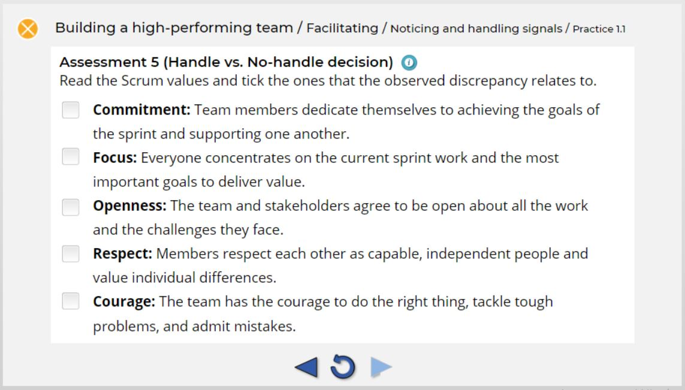

Establishing a teachable principle beneath the practical expertise
As expected, in the interviews the SME delivered detailed reports of instances, valuable stories of what they did and why it worked. Also in alignment with the literature on knowledge elicitation and SME collaboration, they did not explicitly state the underlying principle their decisions rested on. They had stopped referring to any guidebook long ago; the principles were internalised, and in the interviews they only briefly mentioned a connection to the Scrum framework: "it must be somewhere in the Scrum values, or the Scrum pillars."
For a learning module that was a problem: for the skill to be teachable, I needed an explicit framework for the learner to stand on. There is a lot of judgment involved in this skill, so a stated norm against which incidents could be judged, serving as a basis for deciding which signals mattered and which didn't, was vital.
The framework came from the SME; my job was to turn it into an actionable input for the learner. When I asked what made a team healthy, they answered in Scrum's own terms: openness, respect, commitment, and said plainly that they didn't want to "invent Scrum," since the team in question was already a Scrum team. However, the practical, teachable link between that framework and the incidents they described still seemed missing.
My idea was that the thing the SME called "a signal" was, in fact, a discrepancy between the behaviour a Scrum-aligned team would show and the behaviour that was actually observed. Scrum-aligned behaviour was something the SME mentioned as "normal," while the SME's "significant signal" was Scrum-misaligned behaviour. This framing promised to turn a set of loose intuitions into a teachable rule.

Scrum_values.JPG'}))">
When I first approached this through the idea of expected versus unexpected behaviour, the SME became defensive. To a facilitator, "expect" and "expectation" sound like "bias" and "prejudice", i.e. the things they must avoid, focusing instead on staying open and un-expectant with a team. After stumbling on that word twice, I changed tactic.
Instead of resolving the lexical misalignment, I translated the Scrum values from the official guide into concrete observable behaviours and matched them against the incidents the SME had already described. Framing the model in terms of alignment or misalignment with Scrum rather than in terms of met or unmet expectations enabled easy adoption.
In the module the word "expect" appears exactly once, inside a task ("In a healthy team discussing a problem, what do you expect to see?"), and never as a governing concept; elsewhere Scrum-expected behaviour is called "the norm."
The model was approved, and key slides now reference the official Scrum principles directly, thus rooting the expert's practical expertise in a well-established framework and making it relevant and teachable.